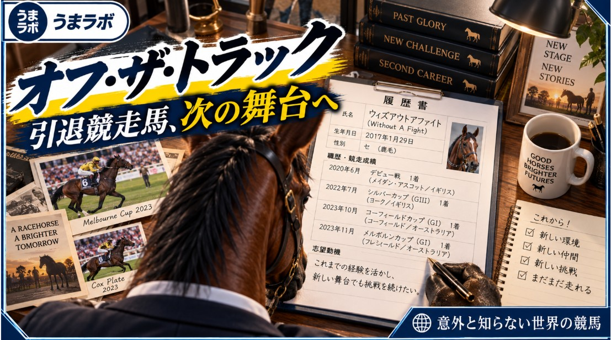

WORLD RACING
意外と知らない世界の競馬
世界各国の競馬制度や文化、レースの特徴など、日本とは異なる世界の競馬を深掘りします。
世界に広がる、
競馬の多様な姿。
世界各国の競馬制度や文化、レースの特徴など、日本とは異なる世界の競馬を深掘りします。
記事一覧
WORLD RACING WORLD RACING
WORLD RACING16年の沈黙を破る競馬場――米カンザス州、150年の歴史を持つユーレカダウンズ復活の物語
米カンザス州の地方競馬場ユーレカダウンズが16年ぶりに復活。150年以上にわたる歴史と、再開を支えた地域の人々の取り組みを紹介。
 WORLD RACING
WORLD RACING豪州先住民の村で60年続く「サンタテレサ・ブッシュレース」――家族が集う伝統の草競馬
オーストラリア・ノーザンテリトリーの先住民コミュニティ、サンタテレサで毎年10月に行われる伝統の草競馬を紹介。
WORLD RACING純血アラブ馬の祭典「中央ヨーロッパ・アラビアンダービー」 ポーランドで11頭が激突
ポーランドのスウジェヴィエツ競馬場で27日、純血アラブ馬によるUAEプレジデンツカップ第15戦「中央ヨーロッパ・アラビアン・ダービー」が行われた。

WORLD RACINGオフ・ザ・トラック -OFF THE TRACK- ～引退競走馬たちの次の物語～
2023年11月7日、フレミントン競馬場。
WORLD RACINGBCクラシックの単勝馬券の先物買い！？ フューチャー・ウェイジャーとは一体何か？
記事全文を読む →
WORLD RACING米競馬界が「ウマ娘」と有馬記念を研究 JRAが米国で語った“若者を競馬場へ連れてくる方法”
記事全文を読む →
WORLD RACING米3冠レースが消滅！？新たな3歳チャンピオンロードが誕生した理由
記事全文を読む →
WORLD RACINGキングジョージ遠征馬が帰国 競走馬はどうやって飛行機に乗るのか？
記事全文を読む →
WORLD RACING単勝・複勝は2ドルから5ドルへ 米競馬場が異例の新ルールを試験導入
記事全文を読む →
WORLD RACINGコリアカップに日本馬24頭が予備登録 ■ 国際G2へ昇格！1着賞金約8000万円「コリアカップ」の舞台となる韓国競馬とは？
記事全文を読む →
WORLD RACING大井競馬場はなぜアメリカの名門競馬場と31年間も交流を続けているのか？
記事全文を読む →
WORLD RACINGマスカレードボール参戦直前に発表 キングジョージの賞金が3年で2倍になる理由
記事全文を読む →
WORLD RACING芝、ダートに次ぐ第3の馬場「タペタ」とは？ 米ベルモント競馬場が導入する理由
記事全文を読む →
WORLD RACING毎年開催国が変わるG1 南米競馬のワールドカップ「ラティーノ」とは
記事全文を読む →
WORLD RACING馬券の還元率が88％から66％へ？ インド競馬を追い詰める“馬券税”の現実
記事全文を読む →
WORLD RACING若者の競馬離れって本当？
記事全文を読む →
WORLD RACING競馬はスポーツではないのか？
記事全文を読む →
WORLD RACING日本のWIN5だけじゃない 世界にはさらに高難易度な馬券がある！
記事全文を読む →
WORLD RACINGえ？競馬場の運営って民間会社だったの？ 英国で起きたライセンス問題
記事全文を読む →
WORLD RACING英国ではブックメーカーしか馬券を買えない？ 実は「4％」しか利用されていないもう一つの馬券発売方式がある
記事全文を読む →
WORLD RACING騎手は子供、距離は最大30km モンゴルの馬の祭典
記事全文を読む →
ARCHIVE過去の記事
過去の記事を見る →